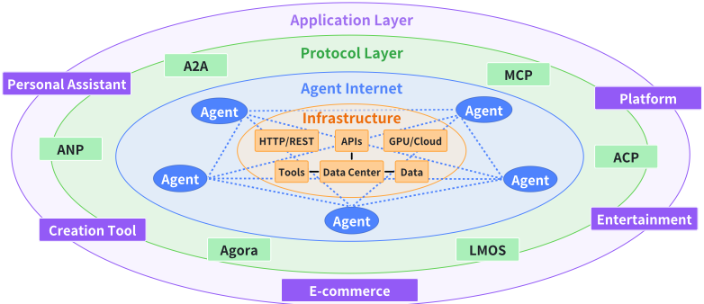
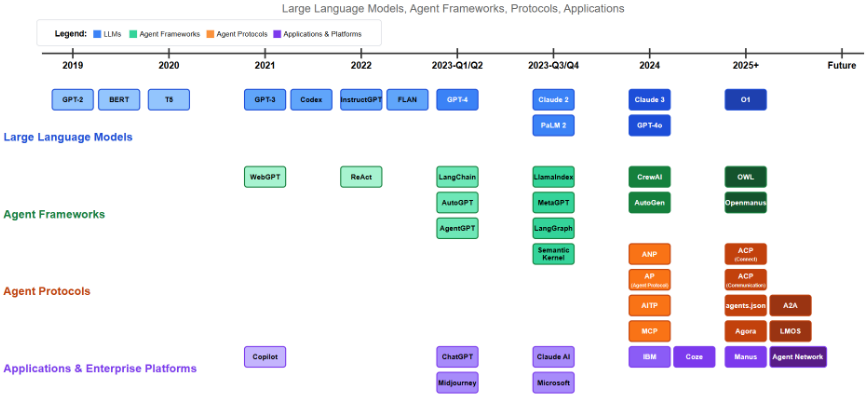
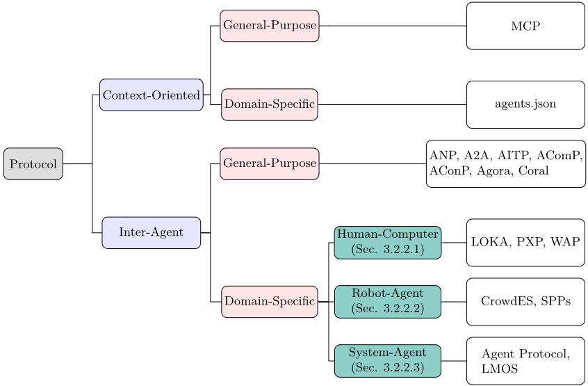
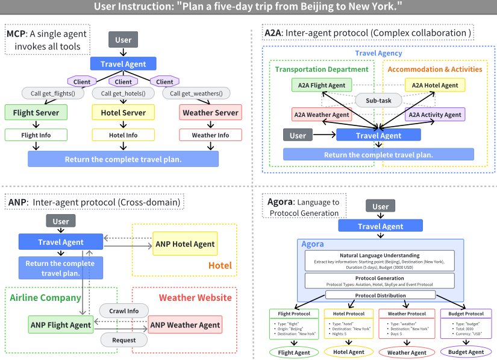

AI Agent 协议综述
LLM Agent 正在客服、内容生成、数据分析等行业快速落地，但 Agent 与外部工具/数据源之间、以及不同厂商与架构的 Agent 彼此之间缺乏标准化通信协议，导致工具调用与接口碎片化、互操作与规模化受限。该综述自称首个对 Agent 协议的全面分析，提出'面向上下文 vs Agent 间'与'通用 vs 领域特定'的二维分类，覆盖 MCP、agents.json、ANP、A2A、AITP、AConP、AComP、Coral、Agora、LMOS 等协议。作者借鉴互联网协议演进经验，从效率、可扩展性、安全、可靠性、可演化性、可运维性、互操作性七个维度构建评测框架并定义 TPS-N、CNS、ARC、UDR 等候选指标，再用'北京—纽约五日行程规划'同一用例对比 MCP（单 Agent 集中调工具）、A2A（企业内多 Agent 协作）、ANP（跨域结构化交互）、Agora（自然语言转协议）四种架构的适用条件。核心结论是协议正从静态规则走向可演化、分层化与群体智能基础设施；对团队而言，它是工具接入（MCP）与多 Agent 通信协议选型的地图式参考。
LLM Agent 广泛部署后，Agent 与外部工具/数据源之间、以及不同厂商/架构的 Agent 彼此之间缺乏标准化通信协议：各 LLM 供应商实现专有工具调用格式、各数据与工具供应商自定义调用接口，造成碎片化，增加 prompt 级定制与多规范维护负担，阻碍互操作、多 Agent 协作与规模化；同时用户和开发者面对众多协议缺乏系统的分类与性能对比依据。
系统综述方法：(1) 提出二维分类框架——对象维度分为 context-oriented（面向上下文，如 MCP、agents.json）与 inter-agent（Agent 间，如 ANP、A2A、AITP、AConP、AComP、Coral、Agora，以及人机/机器人/系统等 domain-specific 协议 PXP、LOKA、WAP、LMOS、Agent Protocol），场景维度分为 general-purpose 与 domain-specific；(2) 逐一剖析代表性协议的原理与工作机制（如 MCP 的 Host/Client/Server/Resource 四组件调用循环、A2A 的 Agent Card 与任务管理、Agora 用 Protocol Documents 缓解 Agent Communication Trilemma）；(3) 借鉴互联网协议七大核心指标构建协议评测框架（效率、可扩展性、安全、可靠性、可演化性、可运维性、互操作性），并定义 TPS-N、CNS、ARC、CT、UDR、MLR、USR、ATPR、NDC、SCTPR 等候选度量；(4) 以同一'北京到纽约五日行程规划'用例对比 MCP/A2A/ANP/Agora 的架构差异与适用条件；(5) 给出短/中/长期学术展望（评测基准、隐私保护协议、Agent Mesh、可演化协议、分层协议架构、群体智能基础设施等）。
未在论文中说明
据作者称是首个对现有 Agent 协议的全面综述：首次提出 context-oriented/inter-agent × general-purpose/domain-specific 的二维系统分类；将互联网协议演进的七大指标（互操作性、性能效率、可靠性、可扩展性、安全性、可演化性、简洁性）迁移到 Agent 协议评测并给出候选量化指标；并以同一用例横向对比 MCP/A2A/ANP/Agora 的架构模式与适用条件，填补此前协议梳理缺失、开发者难以选型的空白。
相关度级别：high
命中能力域：3.3 Agent 架构与工具使用 | 3.4 多智能体协作 | 3.1 上下文工程与记忆 | 3.5 评测与可靠使用
理由：团队 3.3 能力域明确包含'MCP 等工具协议'、3.4 明确包含'Agent 间通信协议'，本文正是这两个主题的首个系统综述：给出 MCP 的 Host/Client/Server/Resource 工作机制与安全设计、A2A/ANP/Agora 等协议的原理及同一用例下的架构对比，直接支撑团队在 Agent harness、工具接入与多 Agent 编排上的协议选型。对 3.1：context-oriented 协议标准化了 Agent 与外部数据/工具间的上下文获取，MCP 通过 client-server 解耦工具调用与 LLM 响应、敏感信息可离线保存，与生产系统中的上下文管理直接相关。对 3.5：论文给出协议评测的七维框架与候选指标（TPS-N、CNS、ARC、UDR、MLR 等），并系统讨论认证模式、ACL 粒度、上下文脱敏等安全机制与重传/流控等可靠性机制，可作为团队评估接入方案的检查清单；但需注意论文明确不提出 benchmark、无量化实验。
建议动作：深入精读并做内部分享
arXiv:2504.16736v3 [cs.AI] 2025年6月21日
Yingxuan Yang, Huacan Chai, Yuanyi Song, Siyuan Qi, Muning Wen, Ning Li, Junwei Liao, Haoyi Hu, Jianghao Lin ∗ , Gaowei Chang † , Weiwen Liu, Ying Wen, Yong Yu, Weinan Zhang
上海交通大学，† ANP社区 {zoeyyx, chiangel, wnzhang}@sjtu.edu.cn
大语言模型（LLM）的快速发展，使得LLM Agent在客户服务、内容生成、数据分析乃至医疗健康等众多行业中得到广泛部署。然而，随着越来越多的LLM Agent被部署，一个重大问题逐渐显现：这些Agent与外部工具或数据源之间缺乏标准的通信方式。标准化协议的缺失使Agent难以协同工作或有效扩展，也限制了它们应对复杂现实世界任务的能力。面向LLM Agent的统一通信协议有望改变这一局面：它将使Agent与工具之间的交互更加顺畅，促进协作，并触发群体智能的形成。本文首次对现有Agent协议进行了全面分析，提出了一种系统的二维分类方法，用以区分面向上下文的协议与Agent间协议，以及通用协议与领域专用协议。此外，我们在安全性、可扩展性和延迟等关键维度上对这些协议进行了对比性能分析。最后，我们通过识别关键研究方向以及下一代协议所必需的特性，探索了Agent协议的未来图景。这些特性包括适应性、隐私保护和基于群体的交互，以及向分层架构和群体智能基础设施演进的趋势。我们期望这项工作能够为致力于设计、评估或集成面向智能Agent的健壮通信基础设施的研究人员和工程师提供实用的参考。持续更新与最新进展将维护于 https://github . com/zoe-yyx/Awesome-AIAgent-Protocol 。
∗ 通讯作者。
1
| 1 Introduction | 1 Introduction | 1 Introduction | 3 |
|---|---|---|---|
| 2 | Preliminaries | Preliminaries | 4 |
| 2.1 | Definition and Characteristics of LLM agents . . . . . . | . . . . . . . . . . . . . . . . 4 | |
| 2.2 | Definition and Developments of Agent Protocols . . . . | . . . . . . . . . . . . . . . . 6 | |
| 3 | Protocol Taxonomy | Protocol Taxonomy | 7 |
| 3.1 Context-Oriented Protocols | . . . . . . . . . . . . . . . . | . . . . . . . . . . . . . . . . 8 | |
| 3.1.1 | General-Purpose Protocols . . . . . . . . . . . . | . . . . . . . . . . . . . . . . 9 | |
| 3.1.2 | Domain-Specific Protocols . . . . . . . . . . . . . | . . . . . . . . . . . . . . . . 11 | |
| 3.2 | Inter-Agent Protocols . . . . . . . . . . . . . . . . . . . | . . . . . . . . . . . . . . . . 11 | |
| 3.2.1 | General-Purpose Protocols . . . . . . . . . . . . | . . . . . . . . . . . . . . . . 11 | |
| 3.2.2 | Domain-Specific Protocols . . . . . . . . . . . . . | . . . . . . . . . . . . . . . . 15 | |
| 4 | Protocol Evaluation and Comparison | Protocol Evaluation and Comparison | 18 |
| 4.1 | Efficiency . . . . . . . . . . . . . . . . . . . . . . . . . . | . . . . . . . . . . . . . . . . 19 | |
| 4.2 | Scalability . . . . . . . . . . . . . . . . . . . . . . . . . . | . . . . . . . . . . . . . . . . 20 | |
| 4.3 | Security . . . . . . . . . . . . . . . . . . . . . . . . . . . | . . . . . . . . . . . . . . . . 21 | |
| 4.4 | Reliability . . . . . . . . . . . . . . . . . . . . . . . . . . | . . . . . . . . . . . . . . . . 21 | |
| 4.5 | Extensibility . . . . . . . . . . . . . . . . . . . . . . . . | . . . . . . . . . . . . . . . . 22 | |
| 4.6 | Operability . . . . . . . . . . . . . . . . . . . . . . . . . | . . . . . . . . . . . . . . . . 23 | |
| 4.7 | Interoperability . . . . . . . . . . . . . . . . . . . . . . . | . . . . . . . . . . . . . . . . 23 | |
| 4.8 | Evaluation over Protocol Evolution: Case Studies . . . . | . . . . . . . . . . . . . . . . 24 | |
| 5 | Use-Case Analysis | Use-Case Analysis | 25 |
| 5.1 MCP: Single Agent Invokes All Tools | . . . . . . . . . . . | . . . . . . . . . . . . . . . . 25 | |
| 5.2 A2A: Complex Collaboration Inter-agents Within | an | Enterprise . . . . . . . . . . . . 26 | |
| 5.3 ANP: 5.4 Agora: Natural Language to Protocol | Cross-Domain Agent Protocol . . . . . . . Generation . . . . | 27 . . . . . . . . . . . . . . . . 27 | |
| 6 | Academic Outlook | Academic Outlook | 28 |
| Short-Term Outlook: From Static to | . . . . . | . . . . . . . . . . . . . . . . 28 | |
| 6.1 Evolvable 6.2 Mid-Term Outlook: From Rules to Ecosystems | . . . . . | . . . . . . . . . . . . . . . . 29 | |
| 7 | 6.3 Long-Term Outlook: From Protocols to Intelligence Infrastructure Conclusion | 6.3 Long-Term Outlook: From Protocols to Intelligence Infrastructure Conclusion | . . . . . . . . . . 29 29 |
| 1 Introduction | 1 Introduction | 1 Introduction | 3 |
2
随着大语言模型（LLM）的快速发展，LLM 智能体 1 正日益被部署到各个行业，包括自动化客户服务、内容创作、数据分析和医疗辅助（OpenAI et al., 2024; Gottweis et al., 2025; Yang et al., 2025a; Guo et al., 2024; Zhou et al., 2024），正在改变着我们的日常工作和生活。为了充分发挥智能体的潜力，许多架构应运而生，以促进智能体与外部实体之间的通信。这些实体既包括不受智能体直接控制的资源，例如各类数据源和工具，也包括其他在线智能体。
然而，随着应用场景范围的不断扩大，以及来自不同厂商、具有不同结构的智能体的涌现，智能体与实体之间的交互规则变得愈发复杂。这一演进过程中的一个关键瓶颈在于标准化协议的缺失。这种缺失阻碍了智能体与上述资源之间的互操作性（Qu et al., 2025; Patil et al., 2023; Liu et al., 2024），限制了智能体利用外部功能的能力。此外，标准化协议的缺乏使得来自不同提供商或不同架构背景的智能体无法实现无缝协作，从而限制了智能体网络的可扩展性。最终，智能体解决更复杂现实世界问题的能力也因此受到限制。
这些挑战让人回想起计算史上一个关键时刻：早期互联网曾因互不兼容的系统和有限的连接能力而处于割裂状态。如今，LLM 智能体的格局也面临着类似的孤立问题。TCP/IP 和 HTTP 协议的革命性影响并不仅仅在于解决了技术问题——它们开启了一个前所未有的全球互联、创新与价值创造的时代，深刻改变了人类社会。同样，为智能体系统建立统一协议不仅仅能解决当前的互操作性问题——它还将催生更具变革性的事物：一个互联的智能网络（Rajaei, 2024; Yang et al., 2024; Chen et al., 2024; Yang et al., 2025b）。这种标准化将使不同形式的智能得以在系统之间流动——内嵌智能的工具可以与专用智能体无缝交互，结合彼此的能力，创造出超越任何单一组件的涌现式集体智能形态。这一智能网络将打破“工具智能”与“智能体智能”之间的人为壁垒，使二者能够动态地相互融合、增强与互补。专用智能体可以组成临时联盟来解决复杂问题，智能工具可以同时扩展多个智能体的能力，而全新的认知架构也可能从这些标准化交互中涌现。其结果将不仅仅是更高效的自动化，而是一种根本性的全新范式——分布式协作智能，它能够应对当今孤立系统力所不及的挑战。
为解决上述局限性，现有工作持续推进协议的标准化。例如，在智能体与资源之间的通信方面，Anthropic 推出了模型上下文协议（Model Context Protocol, MCP）（Anthropic, 2024），该协议对 LLM 智能体与外部资源之间的上下文获取进行了标准化。MCP 极大地增强了智能体与外部数据和工具进行通信的能力，有效地充当“外部大脑”，以扩充智能体的知识并更高效地解决复杂的现实世界问题。类似地，智能体网络协议（Agent Network Protocol, ANP）（Chang, 2024）和智能体间协议（Agent-to-Agent, A2A）（Google, 2025）等协议促进了多智能体场景中来自不同提供商、具有不同结构的智能体之间的协作。然而，尽管这些协议发展迅速，但由于缺乏对智能体协议的详细分析与综述，用户和开发者在实践中面对繁多的智能体协议时常常遇到困难。对用户和开发者而言，最迫切关注的问题包括对各协议之间异同的分析与分类，以及对它们各种性能特性的比较。
本综述首次对现有 Agent 协议进行了全面分析。通过对协议的详细调研，我们首次提出了 Agent 协议的系统化分类，为众多可用协议提供了一个清晰的框架，从而帮助用户和开发者为特定场景选择最合适的协议。此外，我们开展了比较
1 为表述简洁起见，本文将多模态 LLM 概念（Caffagni et al., 2024）并入 LLM 概念之中。
3

分析了各种协议在多个关键维度上的性能，包括安全性、可扩展性和延迟，为 Agent 协议的未来研究和实际应用提供了有价值的见解。最后，我们探讨了 LLM Agent 协议的未来图景，概述了主要研究方向，并指出了下一代协议应具备的特性，以支持不断演进的 Agent 生态系统，例如适应性、隐私保护和基于群体的交互。
总而言之，我们的研究为该领域做出了以下几项重要贡献：
在本节中，我们介绍理解后续综述与分析所必需的基础概念。我们首先定义 LLM Agent，并讨论其关键特性。随后，我们介绍 Agent 协议的概念及其在 LLM 生态系统中所发挥的基础性作用。
LLM Agent 通过将大型语言模型（LLM）固有的复杂语言处理能力与自主决策框架相集成，标志着人工智能领域的一项显著进展 (Yao et al., 2022; Tang et al., 2023; Hong et al., 2024)。具体而言，这些 Agent 是能够生成需要顺序推理的复杂文本输出的先进系统。它们展现出诸如前瞻性规划、维护对过去的上下文记忆等能力。
4

交互，并运用外部工具根据情境需求和期望的沟通风格动态调整响应。
LLM Agent 与标准大型语言模型的区别在于其架构组成与运行能力。LLM 主要侧重于基于输入提示的文本生成，而 Agent 则被设计为能够在真实世界环境中自主运行。LLM Agent 的核心架构通常包括：
5
上述架构组件构成了现代 LLM Agent 的基础结构。在此架构之上，学术研究与工业应用领域的最新进展显著扩展了 Agent 的能力和部署场景。
产业界进展 在产业领域，各大科技公司已开发出日益成熟的 Agent 平台，这些平台在利用上述架构原则的同时，还增加了企业级能力。微软通过创建一个全面的 Agent 生态系统而确立了领先地位，该生态系统可与超过 1,400 个企业系统集成，并允许在其与 OpenAI 的合作关系之外使用多种 LLM 选项 (VentureBeat, 2024)。其自主 Agent 现在能够在极少人工监督的情况下处理复杂工作流，尤其是在销售自动化、客户服务和业务流程优化等领域。同样，IBM 也积极拥抱 Agent 技术，其研究表明企业 AI 开发者中几乎普遍存在采用意向 (IBM Newsroom, 2024)。IBM 侧重于区分简单的函数调用系统与具备强大推理能力的真正自主 Agent，这反映出业界日益认识到，先进的规划与推理组件对于有实际意义的 Agent 应用而言必不可少。Agent 开发的平民化已通过 Coze 等平台加速推进 (TrustedBy.ai, 2024)，该平台使非技术用户能够在各种通信渠道上构建并部署复杂的 Agent。这种开发工具易用化的趋势拓宽了 Agent 在各行各业的采用，从专门的企业级应用延伸至面向消费者的实现。
学术研究方向 学术研究日益聚焦于通过专门为复杂分析任务设计的专用模型来增强 Agent 的推理能力。以推理为导向的模型或类 o1 模型（Jaech et al., 2024）的发展，是使 Agent 能够处理需要多步逻辑过程的复杂问题求解场景的一项重大进展。另一个关键研究方向涉及多智能体（multi-agent）架构，即由多个专用 Agent 协作完成复杂任务 (Yang et al., 2024; Guo et al., 2024; Yang et al., 2025b; Rajaei, 2024)。这些系统将认知负荷分配到多个 Agent 之上，每个 Agent 均针对特定子任务进行了优化，与单 Agent 方法相比，它们在处理复杂、开放式问题方面展现出了更优越的性能。
新兴实现框架 专用框架为 Agent 系统的实际落地提供了便利，这些框架为开发者提供了用于构建 Agent 的预构建组件。LangChain 及其扩展 LangGraph 已成为 Agent 开发的行业标准 (LangChain, 2024)，它们提供了支持复杂推理、规划以及多智能体协作的模块化架构。微软的 Semantic Kernel 框架则专注于将传统软件开发与 AI 能力相衔接 (Microsoft Learn, 2024)，使 Agent 功能能够更轻松地集成到现有企业系统中，而无需进行彻底的架构重构。这种以集成为重点的方法，对于寻求增强而非替换现有工作流的企业而言尤为宝贵。
这些进展共同表明，LLM Agent 已从实验性概念快速演变为部署于多种应用领域中、能够产生实际价值的实用系统。随着该技术不断成熟，更复杂的推理、规划与动作执行能力的集成，有望进一步拓展自主 Agent 在企业和消费场景中的作用。
Agent 协议是定义 Agent 之间以及 Agent 与外部系统之间结构化通信的规则、格式与流程的标准化框架。与传统交互机制——如应用程序接口（API）、图形用户界面（GUI）或基于 XML 的交互——相比，协议展现出显著优势，如表 1 所总结。API 虽然高效，但往往缺乏操作灵活性和标准化；GUI 提供用户友好的标准化界面，但效率有限，且并非天然的 AI 原生；与二者不同，协议兼具高效率、广泛操作范围、健全标准化以及与 AI 系统原生兼容的优势。基于 XML 的方法主要用于基于浏览器的交互，同样既缺乏效率，也缺乏全面的标准化。此外，大量专注于浏览器使用的 AI 助手通常依赖 HTML 及其他编程语言和类似技术来实现大语言模型（LLM）与网站之间的交互。然而，这种方法在灵活性和复杂性方面存在不足，这限制了其在其他场景中的适用性。因此，Agent 协议脱颖而出，成为唯一能够支持多样化 Agent 生态系统中复杂、动态且可扩展交互的方案，使其成为基于 Agent 的系统通信的首选方法。
6
| Manner | Scenarios | Efficiency | Operation Range | Standardized | AI-Native |
|---|---|---|---|---|---|
| API | Server-to-server integration | ✓✓ | × | × | × |
| GUI | Computer/ Mobile Use | × | ✓ | ✓ | × |
| XML | Browser Use | × | ✓ | × | × |
| Protocol | Agent Interaction | ✓✓ | ✓✓ | ✓✓ | ✓✓ |
| Manner | Scenarios | Efficiency | Operation Range | Standardized | AI-Native |
协议作为一种基础语法，使连贯的信息交换成为可能，让异构的 Agent 系统能够无缝协作，而不受其内部架构差异的影响。这些协议的首要价值在于实现互操作性、确保标准化交互，并使 Agent 能够通过纳入新的工具、API 或服务来轻松集成和扩展其能力。此外，标准化协议提供了维护安全与治理的内在机制，从而将 Agent 行为管理在明确定义且安全的运行参数范围之内。通过抽象掉交互逻辑的复杂性，协议显著降低了 Agent 开发的复杂度，使开发者能够将精力集中于增强 Agent 的核心功能。或许最具变革性的是，当专门的 Agent 组成临时联盟以解决复杂问题时，协议使集体智能得以涌现。通过标准化通信渠道共享洞见并协调行动，分布式 Agent 系统能够取得单体架构无法实现的成果，从而催生全新的认知架构，将推理分布于多个专门的系统之中。
当前的 Agent 协议格局涵盖了多种战略范式。以模型为中心的协议以 Anthropic 的模型上下文协议（Model Context Protocol, MCP）（Anthropic, 2024）为代表，旨在使主要技术提供商获得生态系统影响力与资产控制权。面向企业的协议，例如 Agent 到 Agent 协议（Agent-to-Agent, A2A）（Google, 2025），则优先关注企业内部环境中的集成、安全与治理。与此同时，以 Agent 网络协议（Agent Network Protocol, ANP）（Chang, 2024）为代表的开放网络协议体现了一种去中心化愿景，旨在建立一个开放的 Agent 互联网，鼓励 Agent 之间不受提供商或技术栈限制的广泛互操作性。这些进展凸显了协议在推动跨多种应用领域的基于 Agent 的协作智能方面所发挥的关键作用。
为应对 LLM Agent 快速演化的需求，多种 Agent 协议相继涌现。然而，现有研究在对这些协议进行系统性分类方面存在不足。为弥补这一空白，我们提出了一个如图 3 所示的 Agent 协议二维分类框架。在第一个维度——对象导向——上，协议被划分为面向上下文和 Agent 间两类；在第二个维度——应用场景——上，它们又被进一步归类为通用型或领域专用型。
7

尽管 LLM 具备先进的语言理解与推理能力，LLM Agent 却不能仅依靠 LLM 的固有知识来响应复杂的查询或意图。相反，为了获得实现目标所需的上下文，LLM Agent 通常需要自主决定何时调用哪些外部工具，并通过这些工具执行动作 (Liu et al., 2025)。例如，考虑这样一个场景：用户就某一特定日期和地点的天气提出问题。在这种情况下，LLM Agent 会自主决定查询真实世界的天气 API 以检索相关数据，从而获得必要的上下文并回答该问题。在发展早期，LLM Agent 的工具使用能力通常通过格式化的函数调用数据集进行微调 (Qu et al., 2025; Schick et al., 2023; Liu et al., 2024)。虽然这种方法能够快速提升 LLM Agent 调用函数和获取所需上下文的能力，但由于缺乏标准化且统一的面向上下文协议，它面临着若干挑战。
然而，LLM 生态系统中标准化协议的缺失，导致工具调用和接口两方面都出现了严重的碎片化。LLM 提供商往往为工具使用实现专有标准，进而导致不同基座模型之间的提示格式各不相同。同样，数据、工具和服务提供商也各自实现自己的调用接口，进一步加剧了不兼容性。这种碎片化加重了用户和开发者的负担，需要进行提示层面的定制以及对多种规范的管理，最终阻碍了互操作性、增加了系统复杂性，并推高了开发和维护成本。
为应对这些挑战，已提出若干面向上下文的 Agent 协议。通过提供标准化的上下文获取方法，这些协议能够减少 Agent 与上下文提供者之间上下文交换的碎片化。根据应用场景，面向上下文的 Agent 协议可分为通用型和领域专用型两类。通用型协议旨在通过统一接口支持广泛的 Agent 和上下文提供者，而领域专用型协议则专注于针对特定用例的专门化优化。
8
| Entity | Scenarios | Protocol | Proposer | Application Scenarios | Key Techniques | Development Stage |
|---|---|---|---|---|---|---|
| Context- Oriented | General- Purpose | MCP Anthropic (2024) | Anthropic | Connecting agents and resources | RPC, OAuth | Factual Standard |
| Context- Oriented | Domain- Specific | agent.json WildCardAI (2025) | Wildcard AI | Offering website information to agents | /.well-known | Drafting |
| Inter- Agent | Genreal- Purpose | A2A Google (2025) | Inter-agent communication | RPC, OAuth | Landing | |
| Inter- Agent | Genreal- Purpose | ANP Chang (2024) | ANP Community | Inter-agent communication | JSON-LD, DID | Landing |
| Inter- Agent | Genreal- Purpose | AITP NEAR (2025) | NEAR Foundation | Inter-agent communication | Blockchain, HTTP | Drafting |
| Inter- Agent | Genreal- Purpose | AComP AI and Data (2025) | IBM | Multi agent system communication | OpenAPI | Drafting |
| Inter- Agent | Genreal- Purpose | AConP Cisco (2025) | Langchain | Multi agent system communication | OpenAPI, JSON | Drafting |
| Inter- Agent | Genreal- Purpose | Coral citeagentcoralprotocol | The Coral Community | Multi agent system communication | - | Drafting |
| Inter- Agent | Genreal- Purpose | Agora Marro et al. (2024) | University of Oxford | Meta protocol between agents | Protocol Document | Concept |
| Inter- Agent | Domain- Specidic | LMOS Eclipse (2025) | Eclipse Foundation | Internet of things and agents | WOT, DID | Landing |
| Inter- Agent | Domain- Specidic | Agent Protocol AlEngineerFoundation (2025) | AI Engineer Foundation | Controller-agent interaction | RESTful API | Landing |
| Inter- Agent | Domain- Specidic | LOKA Ranjan et al. (2025) | CMU | Decentralized agent system | DECP | Concept |
| Inter- Agent | Domain- Specidic | PXP Srinivasan et al. (2024) | BITS Pilani | Human-agent interaction | - | Concept |
| Inter- Agent | Domain- Specidic | CrowdES Bae et al. (2025) | GIST.KR | Robot-agent interaction | - | Concept |
| Inter- Agent | Domain- Specidic | SPPs Gąsieniec et al. (2024) | University of Liverpool | Robot-agent interaction | - | Concept |
| Entity | Scenarios | Protocol | Proposer | Application Scenarios | Key Techniques | Development Stage |
模型上下文协议（MCP）通过引入公开标准化的调用协议，解决了大语言模型（LLM）生态系统中的碎片化问题，将工具使用与特定基础 LLM 提供商及上下文提供者的接口解耦。通过将工具调用与 MCP 对齐，基础 LLM 提供商避免了实现专有格式，从而实现更高的互操作性以及模型间的无缝切换。与此同时，上下文提供者通过一次性集成过程即可支持 MCP，从而使任何兼容 MCP 的 LLM Agent 都能访问其服务。已有研究表明，这种标准化对开发和维护成本具有显著影响，同时还提升了可扩展性和跨平台兼容性。
此外，MCP 降低了由函数调用风格的工具调用与 LLM 响应相耦合而产生的数据安全风险。
具体而言，在请求上下文时，LLM 会生成一个完整且可执行的函数调用，随后由外部工具执行该调用。然而，在上下文需要私有用户信息进行验证的情况下（例如账户凭证），LLM 可能会向用户请求该信息，并将其包含在生成的函数调用中。在这种场景下，基于云的 LLM 的用户需要将其私有信息上传至云端，从而带来重大的数据安全风险。因此，将工具调用与 LLM 响应解耦以缓解这些安全问题，是当前 LLM Agent 面临的挑战之一。
MCP 通过将工具调用与 LLM 响应解耦，增强了上下文获取过程中的隐私性与安全性。LLM 不再直接执行可能包含敏感用户数据的函数调用，而是指定所需的资源与参数，这些资源与参数随后由本地客户端处理。客户端负责构建并执行实际的上下文请求，并在本地层面管理任何必要的用户授权。因此，通过将敏感信息离线存储，可以维护其机密性，从而降低数据泄露的风险。这种架构使用户能够对与 LLM 共享的上下文数据实施控制，从而在确保工具持续有效的同时缓解隐私顾虑。
MCP 是朝着标准化 LLM Agent 与外部资源之间交互迈出的重要一步。通过为上下文获取和工具调用提供统一协议，MCP 减少了基础 LLM 提供商与资源接口两方面的碎片化。其客户端-服务器架构增强了互操作性、可扩展性和隐私性，使其成为构建健壮且安全的 LLM Agent 系统的基础框架。
10
除通用 Agent 协议外，还有一些协议专注于特定领域，以便在这些领域内实现针对性的增强。
agents.json（WildCardAI，2025）agents.json 规范是一种开源、机器可读的契约格式，旨在弥合传统 API 与 AI Agent 之间的鸿沟。该规范构建于 OpenAPI 标准之上，使网站能够在结构化 JSON 文件（通常托管于 /.well-known/agents.json）中声明与 AI 兼容的接口、认证方案和多步骤工作流。与为人类开发者定制的传统 OpenAPI 规范不同，agents.json 引入了诸如 flows（预定义的 API 调用序列）和 links（用于映射动作之间数据依赖关系）等构造，从而便于大语言模型（LLMs）进行可靠的编排。其设计强调无状态性、对现有 API 的最小修改，以及面向 LLM 消费的优化。通过为 Agent 交互提供清晰、标准化的 schema，agents.json 简化了集成，减少了对提示工程的需求，并提升了 API 在 agentic 场景中的可发现性和可用性。
随着大语言模型（LLMs）和 Agent 技术的发展，人们越来越关注如何克服单 Agent 能力的局限以应对更复杂的任务，对多智能体协作的兴趣显著激增。在一些大规模、复杂且本质上可分解或分布式的任务中，多智能体方法能够提高效率、降低成本，并提供更好的容错性和灵活性，在整体性能上往往优于单 Agent 系统（Stone and Veloso, 2000; Dorri et al., 2018）。Agent 之间的交互是多智能体系统（Multi-Agent System, MAS）的关键组成部分。然而，当前大多数 MAS 框架直接将 Agent 嵌入系统结构中，缺乏对 Agent 交互方式的明确定义标准，这将阻碍多智能体系统的发展。因此，人们日益需要建立一种规范 Agent 间交互的标准化协议，即 Agent 间协议（Inter-Agent Protocol）。
该协议应有效解决诸如 Agent 发现、信息共享以及通信方法和接口标准化等问题，从而为 Agent 间交互提供统一的协议。在实际应用中，部署在不同平台上、属于不同厂商的 Agent 往往具有不同的技能和能力，可能需要进行互操作以满足用户的特定请求。可能出现讨论、协商、辩论和协作等多种类型的通信，所有这些通信都涉及两个或多个 Agent 之间的信息交换。Agent 间协议在实现和管理这些交互场景方面发挥着关键作用。
与面向上下文的 Agent 协议类似，Agent 间协议也可以根据其应用场景划分为通用型和领域专用型两类。
目前已提出多种 Agent 间协议，包括 Agent 网络协议（Agent Network Protocol, ANP）(Chang, 2024)、Google 的 Agent2Agent 协议（A2A）(Google, 2025)、Agent 交互与交易协议（Agent Interaction & Transaction Protocol）(NEAR, 2025)、Agent 连接协议（Agent Connect Protocol, AConP）(Cisco, 2025) 以及 Agent 通信协议（Agent Communication Protocol, AComP）(AI and Data, 2025)。尽管这些协议都围绕 Agent 之间的交互构建，但它们在问题领域、应用场景和实现策略上各不相同。下文将对上述协议进行讨论。
Agent 网络协议 (Chang, 2024)
Agent 网络协议（Agent Network Protocol, ANP）是由开源技术社区开发的一种开源 Agent 协议，旨在实现异构领域中各类 Agent 之间的互操作性。其愿景是定义 Agent 之间标准化的连接机制，并为数十亿 Agent 构建一个开放、安全、高效的协作网络。正如人类之间的交互催生了互联网，Agent 网络中的共识也受到类似的启发。然而，要实现这样一个网络，需要针对 Agent 独特的通信与协调需求设计专用的基础设施。ANP 的核心原则如下：
11
| Inter-Agent Protocol | Core Problem | Application Scenarios | Key Techniques | Development Stage |
|---|---|---|---|---|
| ANP (Agent Network Protocol) | Cross-Domain Agent Communication | Agent on the Internet | JSON-LD, DID | Landing |
| A2A (Agent2Agent Protocol) | Complex Problem Solving of Agents | Inter Agent Collaboration | RPC, OAuth | Landing |
| AITP (Agent Interaction & Transaction Protocol) | Agent Communication and Value Exchange | Agents Secure Transactions and Interactions | Blockchain, HTTP | Drafting |
| AConP (Agent Connect Protocol) | Standardize Interface to Invoke and Configure Agents | Agent Communication and Value Exchange | OpenAPI, JSON | Drafting |
| AComP (Agent Communication Protocol) | Standardize Practical, Valuable Communication Features | Agent Communication and Value Exchange | OpenAPI | Drafting |
| Coral | Decentralized Collaborative Infrastructure for AI Agents | The Internet of Agents | - | Drafting |
| Agora | Meta Protocol Communication Flexibility | Inter Agent Collaboration | Oxford | Drafting |
| Inter-Agent Protocol | Core Problem | Application Scenarios | Key Techniques | Development Stage |
ANP 由三个核心层组成：
其工作流程可以简单描述如下：本地 Agent 首先通过标准化的发现路径检索其他 Agent 的列表；随后访问该列表中引用的 Agent 描述文件；基于描述文件中提供的信息，该 Agent 利用所需的接口发起交互，构建格式正确的请求，附加身份验证凭据并发送请求，最后处理相应的响应。
12
就 ANP 的意义而言，它为 Agent 网络通信引入了一种创新性解决方案，标志着 Agent 互联网（Internet of Agents）这一创造性概念。未来的研究方向包括：优化跨平台身份认证以提升可扩展性和实用性；探索更合适的 Agent 通信协议以提高数据交换的效率和可靠性；以及研究区块链技术在 Agent 网络中的潜在应用，尤其是在去中心化身份管理和经济激励机制领域。
Agent 连接协议（Agent Connect Protocol，AConP）（Cisco, 2025）Agent Connect Protocol（AConP）定义了用于调用和配置 Agent 的标准接口。它提供了一组可调用的 API，涵盖五个关键方面：Agent 检索、执行（run）、中断与恢复、线程管理（thread run）以及输出流式传输。这些 API 共同构成了与 Agent 交互的使用流程。调用某个 Agent 所需的必要信息存储在 Agent ACP Descriptor 中，该描述符唯一标识一个 Agent、描述其能力，并规定了这些能力的使用方式。严格来说，AConP 定义的是用于连接和使用 Agent 的标准接口，而非显式地促进 Agent 间交互。然而，通过将 ACP Descriptor 与这组 API 结合使用，Agent 之间也可以通过 AConP 实现互联并相互协作。
Agent 通信协议（Agent Communication Protocol，AComP）（AI and Data, 2025）这是一个通用协议，允许 Agent 跨越不同的团队、框架、技术和组织进行通信与协作，将当今 AI Agent 碎片化的格局转变为相互连接的队友。AComP 并不立即强加严格的规范，而是首先强调实用且有用的特性，并将对已展现出价值的特性进行标准化，从而确保更广泛的采用和长期兼容性。它不管理工作流、部署或 Agent 之间的协调。相反，AComP 通过标准化 Agent 之间的通信方式，实现跨多种 Agent 的编排。当前最新版本包含四个关键特性：基于 REST 的通信（使用 HTTP 模式）、无需 SDK（但可提供）、离线发现以及异步优先、支持同步，从而实现兼容 RESTful、支持流式传输的架构、结构化多部分消息（MIME）以及基于令牌的安全性。
Coral 协议（The Coral Protocol）（Georgio et al., 2025）Coral 协议是一个开放且去中心化的协作基础设施，旨在解决由不同组织部署的专有 AI Agent 之间的互操作性挑战。它为 AI Agent 之间的通信、协调、信任和支付提供了统一框架，使跨不同领域和供应商的高效协作成为可能。该协议的关键特性包括线程化通信模型、将 Coral Server 用作协调层，以及将 MCP 作为标准化的 Agent 通信协议。此外，每个 Agent 由结构化身份、被分配的角色和作用域内存来定义，这些要素确立了 Agent 与系统以及彼此之间的交互方式，从而实现信任、模块化和受控的信息共享。该协议支持基于任何框架构建的 Agent 进行安全且高效的协作，并将自身定位为未来将 Agent 集成到软件系统中的潜在实用协议。
Agora (Marro et al., 2024) 在大语言模型（LLM）Agent 出现之前，计算机科学领域的研究人员已花费数十年时间探索面向 Agent 的通信范式设计（Gilbert, 2019）。LLM Agent 的出现重新激发了围绕 Agent 通信协议的讨论。LLM 在遵循自然语言指令（Wei et al., 2022）和处理结构化数据（Collins et al., 2022）方面均展现出显著进步。与此同时，LLM 在各类现实世界任务中也表现出卓越的能力（Pyatkin et al., 2022; Zhong and Wang, 2023; Wei et al., 2022）。根据 Hu et al. (2022) 和 Marro et al. (2024) 的研究，专用 LLM 相较于通用 LLM 展现出更优的性能，这凸显了基于异构 LLM 的 Agent 网络的巨大潜力。异构 LLM 的区分性特征主要包括架构、能力和使用策略。然而，基于异构 LLM 的 Agent 网络面临 Agent 通信三难困境（Agent Communication Trilemma），难以在通用性（versatility）、效率（efficiency）和可移植性（portability）之间取得平衡（Marro et al., 2024）。
14
在 LLM Agent 通信中，通用性、效率和可移植性构成了 Agent 通信三难困境。通用性要求通信支持多种消息类型和格式以适应不同的任务场景，但这会增加协议的复杂性，提高实现难度和成本，并导致可移植性下降。效率要求通信具有较低的计算和网络成本，并最大限度地减少可能导致潜在错误的歧义，但高度灵活的通信机制往往伴随着大量计算开销，例如频繁使用自然语言进行通信。可移植性要求协议易于实现和部署，但复杂而灵活的协议需要大量的编程工作，从而使得其在不同 Agent 间的应用变得困难且耗时。这三个因素相互依存，使得同时优化三者极具挑战性。
为了解决 Agent 通信三难困境，Agora 利用 LLM 在自然语言理解、代码生成和自主协商方面的能力，使 Agent 能够根据上下文采用不同的通信协议。频繁的通信采用结构化协议以确保效率，而不频繁的通信则依赖由 LLM 生成例程（routine）的结构化数据。在发生罕见通信或故障时，LLM Agent 会切换到自然语言，这一转变也有助于协议协商。Agora 引入了协议文档（Protocol Documents, PDs），即纯文本形式的协议描述，使 Agent 能够在无需人工干预的情况下自主协商、实现、适配甚至创建新协议。
Agora 的设计旨在通过支持多种通信方式来适应各种场景，包括传统结构化协议、LLM 例程和自然语言通信，从而满足通用性要求。对于频繁的通信任务，它优先采用高效的传统协议和 LLM 例程，以最小化计算开销和延迟，仅在必要时才使用自然语言，从而在通用性与效率之间取得平衡。其设计使 Agent 能够自主协商、实现并使用协议，从而减少对人工编程的依赖。PD 促进了协议共享，并为各种场景和 LLM 提供支持，增强了兼容性和可扩展性，有效解决了 Agent 通信三难困境（Agent Communication Trilemma）。
领域专用协议（Domain-Specific Protocols）作为量身定制的通信与协调机制，用于规范智能 Agent 与其对等实体在不同运行领域中的交互。这些协议旨在应对每种交互情境的独特需求与约束，确保行为稳健、可解释且符合伦理。在本节中，我们将领域专用协议划分为三个主要分支：（1）人-Agent 交互协议（Human-Agent Interaction Protocols），侧重于培养相互理解与信任；（2）机器人-Agent 交互协议（Robot-Agent Interaction Protocols），强调物理环境中的空间推理与行为协调；（3）系统-Agent 交互协议（System-Agent Interaction Protocols），旨在促进可扩展、可互操作且安全的多智能体生态系统。每个类别都涵盖专门的协议框架，用以处理各自领域中通信、身份、决策与任务执行等方面的细微差异。
15
人类-Agent 交互协议（Human-Agent Interaction Protocols）专为在人类用户与智能体之间实现有意义、透明且具备上下文感知能力的通信而设计。在可解释性、协作与伦理决策至关重要的领域中，此类协议为将机器行为与人类意图和期望对齐提供了必要的结构。该类别同时强调人类与智能体之间的认知对齐（cognitive alignment，即预测与推理过程的可理解性）和规范对齐（normative alignment，即符合伦理且可问责的交互）。以下协议展示了实现这一目标的两种互补方法：PXP 协议聚焦于面向任务对话中的相互可理解性，而 LOKA 协议则为异构多智能体系统中的身份、信任与伦理协调建立去中心化基础。
PXP 协议（Srinivasan et al., 2024）PXP 协议（Predict and eXplain Protocol，预测与解释协议）是特定领域人类-Agent 交互协议的基石，旨在促进人类专家与由大语言模型（LLMs）驱动的机器智能体之间的双向可理解交互。该协议采用有限状态机模型，使智能体能够通过带有四种标签的消息进行通信：RATIFY、REFUTE、REVISE 和 REJECT。这些标签依据智能体之间所交换的预测与解释的一致或不一致来确定。PXP 协议的实现涉及一个黑板系统和一个在人类智能体与机器智能体之间交替工作的调度器。该协议已在两个不同的领域中得到实验验证：放射学诊断和药物合成路径规划。这些实验证明了该协议能够捕捉人类-LLM 交互中的单向与双向可理解性，为其在设计有效的人类-LLM 协作系统方面的潜力提供了实证支持。
机器人-智能体交互协议（Robot-Agent Interaction Protocols）旨在解决物理环境中智能体（尤其是具身机器人）必须彼此交互并与动态环境交互时所面临的协调、感知与空间推理挑战。这些协议对于在复杂多智能体系统中实现分布式决策、实时环境适应和安全导航至关重要。它们必须在支持鲁棒群体行为的同时，考虑传感器输入的不确定性、部分可观测性以及有限的通信带宽。在本节中，我们介绍两种代表性方法：CrowdES 协议，专注于在机器人密集环境中模拟并适应真实的人群动态；以及空间群体协议（Spatial Population Protocols），为去中心化系统中匿名机器人智能体之间达成几何共识提供分布式解决方案。
CrowdES（Bae et al., 2025）CrowdES 框架提出了一种新颖的交互协议，用于持续且真实的人群行为生成，与机器人-智能体交互尤为相关。该协议集成了人群发射器（crowd emitter）和人群模拟器（crowd simulator），以动态填充环境并模拟多样的运动模式。人群发射器使用扩散模型（diffusion models），基于从输入图像中提取的空间布局为个体分配属性，例如智能体类型和移动速度。随后，人群模拟器生成详细的轨迹，并利用基于马尔可夫链（Markov chain）的状态切换机制融入避碰和群体交互等中间行为。该协议支持对人群行为的实时控制与定制，使机器人能够在动态、异构的环境中导航和交互。其实现利用了扩散模型进行智能体放置、切换动力系统进行行为增强等先进技术，确保了机器人-智能体交互的真实性与灵活性。
空间群体协议（Gąsieniec et al., 2024）空间群体协议（Spatial Population Protocols, SPPs）被提出用于解决匿名机器人之间的分布式定位问题（Distributed Localization Problem, DLP）。该协议使机器人能够通过两两交互就统一的坐标系达成共识，即使它们初始处于任意位置和坐标系中。其关键创新在于每个机器人能够记忆一个或固定数量的坐标，并在交互过程中查询自身与另一机器人之间的距离或向量。该协议以三种变体实现：
这些协议为机器人-智能体交互提供了鲁棒的框架，使分布式系统能够实现高效且精确的定位。
17
系统-智能体交互协议为在复杂数字生态系统中编排、管理和集成 AI 智能体提供了基础性基础设施。该类别涵盖了解决智能体发现、互操作性、生命周期管理和安全通信等挑战的各类协议。值得注意的是，语言模型操作系统（Language Model Operating System, LMOS）为构建和运行多智能体系统提供了一个全面的框架，强调开放性与可扩展性。agents.json 规范引入了一种标准化的、机器可读的格式，用于声明 AI 兼容的接口和工作流，从而促进传统 API 与 AI 智能体之间的无缝集成。与此同时，Agent Protocol 定义了一种与框架无关的通信标准，使控制台能够有效地管理智能体操作。这些协议共同为可互操作、可扩展且安全的 AI 智能体生态系统的开发与部署建立了鲁棒的基础。
LMOS（Eclipse, 2025） 语言模型操作系统（LMOS）协议由 Eclipse 基金会开发，为构建智能体互联网（Internet of Agents, IoA）提供了基础架构——这是一个去中心化、可互操作且可扩展的生态系统，AI 智能体和工具无论其底层技术如何，均可在此被发布、发现并实现互连。受 Matter/Thread 和 ActivityPub 等开放协议的启发，LMOS 被划分为三个层次：（1）应用协议层（Application Protocol Layer），使用 JSON-LD 和语义模型对智能体发现与交互进行标准化；（2）传输协议层（Transport Protocol Layer），支持对通信协议（如 HTTP、MQTT、AMQP）进行上下文感知的协商；（3）身份与安全层（Identity and Security Layer），通过 W3C DIDs 确保安全、可验证的身份，并支持 OAuth2 等方案。其关键组件包括去中心化的智能体/工具描述、元数据传播机制、群组管理协议以及灵活的智能体通信接口。LMOS 以开源云原生平台的形式实现，并与 ARC、LangChain 和 LlamaIndex 等工具集成。其用例遍及客户服务和制造等领域，在这些领域中，智能体可跨工具和组织自主协调，以解决问题并优化运营。
Agent Protocol（AlEngineerFoundation, 2025）Agent Protocol 是一种开源、框架无关的通信标准，旨在实现控制台与 AI 智能体之间的无缝交互。该协议基于 OpenAPI v3 构建，定义了用于执行关键智能体生命周期操作——启动、停止和监控智能体——的统一接口。该协议引入了若干核心抽象，例如用于任务执行的 Runs、用于管理多轮交互的 Threads，以及用于实现持久化长期记忆的 Store。通过将这些功能标准化，Agent Protocol 使开发者能够跨不同系统编排异构智能体，从而促进多智能体环境中的互操作性、可扩展性和运行透明性。
智能体间协议（Inter-Agent Protocol）与面向上下文的协议（Context-Oriented Protocol）之间存在一定的关联。在面向上下文的交互中，交互式工具可以被视为自主性较低的智能体；反之，在智能体与智能体的交互中，参与通信的智能体也可以被视为自主性较高的工具，其设计目的在于完成特定的智能任务。与通过 MCP 等协议连接的传统工具不同，充当工具的智能体还能够作为任务发起者。被链接的智能体随后可以发出请求，并与其他智能体或传统工具进行交互。在这一抽象层次上，工具本质上代表了智能体所具备的某种特定技能或能力。从长远来看，面向上下文的交互与自主智能体交互这两种范式可能会逐渐融合，并在设计与应用上日益趋于同质化。
在智能体通信协议快速演进的格局中，由于该领域迭代节奏极快，静态的性能或功能比较很快就会过时。例如，于2024年11月推出的MCP最初并不支持HTTP和认证机制。
18
| Dimension | Description | Key Metric |
|---|---|---|
| Efficiency | Fast and resource-efficient communication. | • Latency • Throughput • Resource Utilization |
| Scalability | Stable performance with increasing complexity of tools/agents/networks. | • Node Scalability • Link Scalability • Capability Negotiation |
| Security | Trusted interactions via authentication, access control, and data safeguarding. | • Authentication Mode Diversity • Role/ACL Granularity • Context Desensitization Mechanism |
| Reliability | Consistent, accurate, and fault-tolerant com- munication. | • Packet Retransmission • Flow and Congestion Control • Persistent Connections |
| Extensibility | Evolution for new features without disrupting existing systems or compatibility. | • Backward Compatibility • Flexibility & Adaptability • Customization & Extension |
| Operability | The ease of implementing, managing, and in- tegrating the protocol in real-world systems. | • Protocol Stack Code Volume • Deployment & Configureation Complexity • Observability |
| Interoperability | Seamless communication and collaboration across diverse platforms, systems, and network environments. | • Cross-System & Cross-Browser Compatibility • Cross-Network & Cross-Platform Adaptability |
| Dimension | Description | Key Metric |
到2025年初，MCP已纳入HTTP服务器发送事件（Server-Sent Events, SSE）与认证机制，此后又过渡到了HTTP流式传输（HTTP Streaming）。这一演进过程恰如互联网时代从TCP/IP到HTTP的发展历程，凸显了在功能、性能与安全性方面的持续增强。
因此，本节聚焦于识别在设计和评估大语言模型（LLM）智能体通信协议时需要考虑的关键维度与挑战，而非提出某个特定的评估基准测试（benchmark）。本节从互联网协议演进过程中观察到的七项核心指标——互操作性、性能效率、可靠性、可扩展性、安全性、可演化性和简洁性——中汲取灵感，考察它们对LLM智能体协议的适用性。如表4所示，通过界定这些评估维度，本节旨在为有效设计与评估LLM智能体协议所必需的各项考量提供全面理解，从而为智能体系统的发展做出贡献。
可扩展性（Scalability）是指当节点（智能体或工具）数量或连接（链路）数量呈指数级增长时，Agent 协议维持性能与可用性的能力，从而确保在日益复杂的大规模多智能体系统中稳健运行。在 Agent 时代，可扩展性的内涵已超越传统互联网协议所关注的问题（如 IP 地址分配或缓存），还涵盖对不断增长的智能体数量、动态工具集成以及高密度通信网络的高效处理。一个可扩展的 Agent 协议必须能够支持数千至数百万个智能体，适应多样化的工作负载，并在不出现显著性能下降的情况下集成新功能。
节点可扩展性（Node Scalability） 节点可扩展性衡量的是当工具、插件或智能体的数量（N）增加时协议维持性能的能力，反映其支撑大规模网络的能力。传统互联网协议（如 IP）利用无类别域间路由（CIDR）(Fuller and Li, 1993) 来管理地址可扩展性，而 Agent 协议还必须处理动态节点发现与协调。节点可扩展性可以通过分析 N 增加时的性能退化曲线（如延迟、吞吐量）来评估。
链路可扩展性（Link Scalability） 链路可扩展性评估的是当通信链路数量成倍增加时协议的性能表现，这对于交互频繁的密集网络至关重要。其测量方法是在链路密度增加时跟踪性能指标（如吞吐量、延迟），例如对比 1,000 个智能体的全连接网状网络与稀疏网络。Agent 协议面临由链路特定开销带来的挑战，例如每个连接中的任务生命周期管理或身份认证，这些都会增加计算成本。
能力协商（Capability Negotiation） 能力协商评估协议是否能够促进智能体之间或智能体与工具之间就通信协议、能力或任务分配达成动态协商一致，以及其随网络规模扩大而扩展的有效程度。为了刻画这一点，我们提出了一个名为能力协商得分（Capability Negotiation Score, CNS）的指标，该指标通过测量节点数量增加时协商的成功率和所需时间来进行评估。
20
安全性是评估智能体协议（Agent Protocol）的一个基本维度，确保智能体与智能体之间以及智能体与工具之间的交互通过健壮的身份认证、加密和完整性校验得到保护。在智能体时代，安全性已超越 SSL/TLS 或 OAuth 等传统互联网协议机制，以应对动态、去中心化且语义驱动的智能体生态系统所带来的独特挑战。一个安全的智能体协议必须提供可靠的身份验证、保障数据机密性、确保消息完整性，并支持细粒度的访问控制。
认证模式多样性（Authentication Mode Diversity） 认证模式多样性评估协议所支持的认证机制的多样性，从而为不同的使用场景和安全需求提供灵活性。该指标可通过统计所支持模式的数量及其在智能体间与智能体-工具场景中的适用性来进行评估。
角色/ACL 粒度（Role/ACL Granularity） 角色/访问控制列表（Access Control List, ACL）粒度衡量协议实施细粒度访问控制的能力，可在不同层级（如字段级、端点级或任务级）指定权限。该指标可通过分析角色定义与 ACL 配置的精确性来评估，例如智能体能否访问工具响应中的特定数据字段或特定任务端点。
上下文脱敏机制（Context Desensitization Mechanism） 上下文脱敏机制评估协议在智能体间或智能体-工具交互过程中，通过匿名化或删减上下文信息来保护敏感数据、最大限度降低暴露风险的能力。该指标通过考察脱敏技术（如数据掩码、令牌化或选择性数据共享）的存在性与有效性来进行评估。
Agent 协议的可靠性是指其在多智能体系统中确保智能体之间通信稳定且准确的能力。与互联网协议（Internet Protocol）强调可靠数据传输类似，Agent 协议确保智能体之间的消息能够准确、完整且及时地送达。它采用消息确认、重传、流量控制和拥塞控制等机制来应对智能体通信中的潜在问题，类似于互联网协议确保网络上可靠数据传输的方式。此外，Agent 协议还融入了容错与恢复机制，即使在个别智能体或通信链路发生故障时也能维持系统稳定，正如互联网协议能够适应网络中断并重新路由数据包以确保可靠交付一样。
数据包重传 类似于传输控制协议（TCP）的重传机制，Agent 协议可以基于定时器实现数据包重传。如果发送方智能体在发送消息后的指定时间内未收到来自接收方智能体的确认（ACK），则会触发重传。此外，接收方智能体还可以在 ACK 消息中向发送方智能体通报丢包情况，促使发送方重传丢失的数据包，从而确保数据传输的完整性和准确性。这可以通过自动重试次数（Automatic Retry Count，ARC）来评估，该指标表示 Agent 协议在检测到网络问题或投递失败时自动重试消息传输的次数。
Automatic Retry Count (ARC) = #message retransmissions when delivery fails
流量控制与拥塞控制 Agent 协议集成了类似于 TCP 的流量控制和拥塞控制机制。在流量控制方面，接收方向发送方通告其可用的接收窗口大小，发送方则动态调整传输速率，以防止缓冲区溢出和数据丢失。与此同时，拥塞控制采用慢启动（slow start）和拥塞避免（congestion avoidance）等策略。发送方最初使用较小的拥塞窗口探测网络容量，并根据反馈逐步增大该窗口。一旦检测到表明网络拥塞的丢包或延迟增加，发送方就会减小其拥塞窗口以降低传输速率。这些相互协调的机制能够在维持网络稳定并防止资源耗尽的同时实现高效的数据传输。这种控制能力可以通过收敛时间（Convergence Time，CT）来评估，该指标指在启动时、可用链路容量发生变化时或新流加入瓶颈链路时达到稳定速率所需的时间。
21
Convergence Time (CT) = clock time to reach a stable state when link changes
持久连接（Persistent Connections） 智能体协议可以在智能体之间建立持久连接，使通信通道在多次数据传输过程中保持开放。与为每次交互都创建新连接不同，持久连接消除了频繁建立与拆除连接的开销，从而降低延迟并提高传输效率。连接的稳定性可以通过意外断连率（Unexpected Disconnection Rate, UDR）和消息丢失率（Message-Loss Rate, MLR）来评估：前者给出单位时间内的意外断连次数，后者指在指定时间范围内未能到达接收方智能体的消息占所发送消息总数的比例。
Agent Protocol 的可扩展性是指其通过添加新特性或修改现有功能来灵活适应新需求和技术发展的能力，同时不破坏向后兼容性。正如互联网协议（Internet Protocol）通过 HTTP 中的自定义头部或 IP 数据包中的可选字段等机制不断演进一样，Agent Protocol 也提供了一个灵活的框架，允许在保持与现有系统兼容的同时引入新能力。这确保了随着多智能体系统需求的增长与变化，协议能够被扩展以适应这些进展，从而保证其长期的相关性与有效性。
向后兼容性 Agent Protocol 随时间不断演进。在这些迭代过程中，协议保持向后兼容性，确保现有功能和应用不受影响。用户可以无缝采用协议的新版本，而无需对其现有系统进行重大调整。向后兼容性可以通过升级成功率（Upgrade Success Rate, USR）来体现，该指标表示在 Agent Protocol 进行重大版本升级后，旧客户端与服务器保持正常交互的成功率。
灵活性与适应性 Agent Protocol 采用灵活的设计，使其易于与现有 IT 技术栈集成，并允许协议适应新的技术进步和应用场景。开发者可以根据特定需求通过添加新字段或新语义来扩展协议。模态无关（modality-agnostic）设计也增强了协议的可扩展性。开发者可以根据不断变化的需求定义新的通信模态，同时确保与现有基于文本的通信模式兼容。灵活性与适应性可以通过自动测试通过率（Automatic Test Pass Rate, ATPR）来评估，即对 Agent Protocol 更新日志中列出的新特性或修改进行自动测试并计算通过率。
22
定制化与扩展 Agent Protocol 允许开发者添加自定义字段以满足特定应用需求。开发者可以扩展这些字段，使其他智能体能够发现它们并与之交互，而不影响现有功能。它还提供插件系统支持。Agent Protocol 提供标准化的插件系统，使开发者能够通过插件添加新特性或新能力。这些插件可以在保持与核心协议兼容的同时引入新字段或新语义。
Agent Protocol 的可操作性指的是它被实现、运行和维护的简便程度与效率。正如互联网协议（Internet Protocol）在设计上强调简洁与清晰以促进广泛的采用和部署一样，Agent Protocol 同样将易于实现和使用放在优先位置。其规范简洁明了，使开发者能够快速将其集成到自己的系统中。该协议与框架无关（framework-agnostic），支持多种编程语言和平台，从而降低了实现复杂度，也降低了开发者的技术门槛。此外，Agent Protocol 提供了完善的文档、软件开发工具包（SDK）和客户端库，提供清晰的开发指导和工具，帮助开发者高效地实现该协议。而且，其分层架构和模块化设计使开发者能够独立地实现和维护不同组件，增强了灵活性并降低了运维复杂度。可操作性的一个粗略评估指标是依赖组件数量（Number of Dependency Components, NDC），它表示 Agent Protocol 所需的依赖组件数量。
Number of Dependency Components (NDC) = #dependency components required
协议栈代码量 Agent Protocol 被设计为轻量级的应用程序编程接口（API）规范，定义了一系列端点和预定义的响应模型，逻辑简洁、语义清晰。其代码量相对较小，易于理解和实现。这使开发者能够快速将其集成到自己的系统中，而无需面对陡峭的学习曲线。例如，Agent Protocol 的核心组件包括 Runs、Threads 和 Store 模块，它们提供完整的生命周期管理、状态控制和持久化存储能力。开发者可以专注于业务逻辑的实现，而不必担心底层架构细节。
部署与配置复杂度 Agent Protocol 采用与框架无关的方式，支持多种编程语言和平台。这使开发者能够使用自己偏好的语言和框架来实现该协议。此外，该协议提供了完善的文档、SDK 和客户端库，提供清晰的开发指导和工具，以简化部署和配置。
可观测性 Agent Protocol 强调可观测性，提供监控工具帮助运维人员跟踪其性能指标，例如消息吞吐量、延迟和错误率。例如，LMOS 平台的可观测性模块提供企业级的监控能力，满足合规性要求。该协议还提供调试工具和接口，协助开发者诊断并解决智能体通信过程中出现的问题。这确保了 Agent Protocol 的稳定运行，并提升了其可操作性。
Agent Protocol 的互操作性是指其使不同系统、框架、浏览器及其他环境之间能够实现无缝通信的能力。正如互联网协议（Internet Protocol）为网络通信建立标准以确保不同设备与系统之间的数据传输一样，Agent Protocol 定义了标准化的通信规则和数据格式，使在不同平台上开发的智能体能够有效交互。它使智能体能够相互发现、通信和协作，而不受其底层实现细节的影响，就像不同的系统和浏览器能够在互联网上无缝交换信息一样。互操作性可以通过模式兼容性测试通过率（Schema Compatibility Test Pass Rate, SCTPR）来评估，该指标反映了智能体在没有版本冲突或数据格式问题的情况下进行有效通信的能力。
23
跨系统与跨浏览器兼容性 Agent Protocol 确保运行在不同操作系统（如 Windows、macOS、Linux）和浏览器（如 Chrome、Firefox、Safari）上的智能体之间实现无缝通信。它提供标准化的 API 和通信接口，抽象掉了底层平台差异。这使得智能体能够使用统一的协议和数据格式进行交互，而无论其操作系统或浏览器环境如何。例如，在 Windows 系统上使用 Chrome 开发的智能体可以与在 macOS 系统上使用 Safari 的另一个智能体进行通信。这种跨系统与跨浏览器兼容性使智能体无需适配特定平台特性，从而实现广泛的互操作性。
跨网络与跨平台适应性 Agent Protocol 支持多种网络环境，包括局域网（LAN）、广域网（WAN）和互联网。它能够适应不同的网络状况，即使网络参数发生变化，也能确保智能体之间的通信稳定。此外，它支持多种编程语言和平台，允许开发者使用自己偏好的语言和框架来实现智能体。这种跨平台与跨语言能力确保基于不同技术栈开发的智能体能够有效通信和协作。例如，用 Python 开发的智能体可以与用 Java 开发的另一个智能体交互。这种适应性使智能体能够在异构的网络和平台环境中运行，增强了它们的互操作性。
在设计和评估智能体通信协议的过程中，观察其演化轨迹有助于揭示协议在功能、性能和安全等方面适应新需求与新挑战的路径。以下分析探讨了两个典型案例——协议迭代与协议体系演化——以说明智能体协议在实践中如何持续演化以满足新出现的需求。
MCP 的迭代：从 MCP v1.0 到 v1.2 的过渡引入了对 HTTP Streaming 和认证（Auth）的支持。这一变化带来了以下影响：
这次迭代体现了协议在扩展功能、优化性能与增强安全之间寻求平衡的过程，展示了协议迭代中所涉及的多维度权衡。
从 MCP 到 ANP 和 A2A 的演化：从 MCP 到 ANP、并最终到 A2A 的发展历程，代表了从单一功能协议向更复杂、多层次、多维度协作架构的转变：
24
这一演化过程展示了从基础功能到复杂系统协作的转变，反映了智能体生态系统在可扩展性和多样性方面的持续扩展。
通过上述案例，我们可以清晰地观察智能体通信协议的发展轨迹，并识别未来潜在的迭代目标。虽然我们不对各协议的优缺点进行直接比较，但我们为智能体开发者和研究者提出以下建议：
本节对四种智能体协议——MCP、A2A、ANP 和 Agora——应用于同一用例的情况进行了对比分析，该用例为：规划一次从北京到纽约的五天旅行。图 4 展示了各协议的架构差异与交互模式。
模型上下文协议（Model Context Protocol, MCP）代表了一种集中式方法，即由单个智能体协调与外部服务的所有交互。如图 4（左上）所示，MCP Travel Client 作为协调智能体，直接依赖于所有外部服务：
25

MCP 架构在简洁性和可控性方面表现出色，但缺乏灵活性。中央智能体必须知晓所有服务及其接口，从而形成一种高依赖性结构，可能难以扩展或修改。此外，所有通信都必须经过中央智能体，这可能会造成性能瓶颈。
Agent-to-Agent（A2A）协议使不同智能体之间能够直接通信，以完成复杂任务。如图 4（右上）所示，A2A 实现将智能分布到多个专门化智能体上：
A2A 协议展示了一种更灵活、更贴近现实的架构，其中各智能体可以在需要时建立直接连接。例如，A2A Flight Agent 可以直接从 Weather Agent 获取天气信息，而无需经过 Travel Planner。这减少了不必要的通信开销，并支持在任意类型的组织或多智能体系统中实现更复杂的协作模式。
26
智能体网络协议（Agent Network Protocol, ANP）通过标准化的跨域交互扩展了协作。图 4（左下）展示了 ANP 如何使不同组织域中的智能体之间能够进行协商：
ANP 通过将基于协议的交互过程形式化，来应对独立智能体之间协作的挑战。A2A 侧重于基于消息的委托，而 ANP 则为智能体之间的结构化请求与响应建立了明确的协议。这使得 ANP 特别适用于涉及具有不同能力、定义良好的接口以及可能不同安全边界的智能体的场景，无论这些智能体是存在于同一系统内还是跨多个系统。
Agora 协议代表了最以用户为中心的方法，将自然语言请求直接转换为标准化协议。如图 4（右下）所示，Agora 引入了若干独特的层次：
Agora 的三阶段流程（理解、生成、分发）构建了一个高度可适应的系统，使专用智能体免于应对自然语言处理的复杂性。这种关注点分离使领域专用智能体能够专注于其核心能力，而由 Agora 层负责解释用户意图。
通过该案例研究可以清楚地看到，每种协议的成功应用都有其特定的条件和依赖关系。1) MCP 采用一个集中式智能体（例如旅行助手），按顺序调用具有清晰接口的工具来完成任务。这种方法对于定义良好的工作流非常高效，但可能需要修改中央智能体才能适应新场景。2) A2A 通过专用智能体（例如航班、酒店、天气）之间的消息/数据交换实现协作。每个智能体自主处理其被分配的任务，并将结果回传给协调智能体，从而在保持整体协调的同时实现灵活的通信模式。3) ANP 利用基于协议的结构化交互，其中主智能体保留处理逻辑，但通过定义良好的类 API 接口将特定执行步骤委托出去。这种标准化方法无论智能体存在于同一系统内还是跨不同域，都能有效工作。4) 最后，Agora 专注于将自然语言转换为适当的结构化协议，充当中间层，将用户意图映射到不同智能体所需的具体协议。每种协议的适用性取决于诸如期望的智能体自主程度、通信灵活性、接口标准化程度以及所执行任务的复杂性等因素。
27
智能体协议的发展正在快速推进。本节概述该领域在短期、中期和长期内的预期演进，重点介绍研究趋势、新兴挑战以及前瞻性愿景。
评估与基准测试。尽管已针对不同的 Agent 应用提出了多种协议，但用于评估其有效性的统一基准测试（benchmark）仍未得到充分探索。当前的努力正趋于设计超越任务成功的评估框架，将通信效率、对环境变化的鲁棒性、适应性以及可扩展性等方面纳入考量。多样化仿真环境和标准化测试平台的发展有望同时提供受控与开放式两类场景，从而促进不同协议之间公平且一致的比较。
隐私保护协议。随着 Agent 越来越多地运行于敏感领域（如医疗保健、金融），确保安全且保密的通信变得至关重要。未来的研究应探索开发此类协议：使 Agent 能够在交换信息的同时，最大限度地减少内部状态或个人数据的暴露。对信息的访问可通过授权机制加以管理，该机制可基于通信协议中所定义的 Agent 角色、任务或安全许可等属性。此外，受联邦学习（Zhang et al., 2021）的启发，协议可通过让 Agent 共享聚合的见解、由本地持有的私有数据推导出的信息或匿名化的中间结果来促进协作，而非传输原始的敏感信息。
Agent Mesh 协议。现有的 Agent 交互协议主要面向成对 Agent 之间的通信而设计，随着 Agent 数量和复杂性的增长，这种方式可能变得越来越低效。为克服这些局限，我们设想开发一种 Agent Mesh 协议——一种受数字时代人类群聊启发的通信模型。该协议将使 Agent 组内的通信历史实现完全透明并可共享访问，从而促进更有效的协调与协作决策。实现 Mesh 协议将需要设计相应机制，以支持组级语义、维护共享知识的一致性与同步，并有效应对消息排序、动态组成员关系和通信开销等挑战。
可演化协议。未来的智能体系统可能不再将协议视为静态规则，而是引入可演化协议——将协议视为动态、模块化且可学习的组件，作为智能体自适应能力不可或缺的组成部分。在这种范式下，协议不再是外部强加的不可变框架，而是智能体能够主动管理和完善的资源。可以使智能体能够检索特定的协议模块，或组合多个协议中的元素，以构建针对当前任务需求量身定制的通信策略。此外，还可以训练智能体发现最优的协议变体或协商策略，从而随时间推移提升通信效率或提高任务成功率。这种适应性将使智能体系统能够泛化到新情况，针对特定伙伴或条件优化交互，并有可能扩展到更复杂的协作场景。
28
内置协议知识。未来的发展可能不再在推理时提供协议指令，而是探索将协议内容和结构集成到参数中训练大语言模型的可能性。这使得智能体无需显式提示即可执行符合协议的行为，从而实现更高效、更无缝的交互。然而，通过训练直接注入协议知识会带来适应性方面的局限——因为模型一旦训练完成，便难以纳入对协议标准的更新或修改。尽管如此，这对模型提供商仍具有战略意义，因为选择嵌入哪些协议可能会影响智能体生态系统中未来的标准与竞争格局。
分层协议架构。协议设计可能会从当前彼此孤立的结构演变为分层协议架构，其目标是在不同通信层级之间实现关注点分离。通过将底层传输与同步机制同高层语义及任务相关交互解耦，此类架构能够提升异构智能体之间的模块化程度与可扩展性。受经典网络协议设计的启发，这种架构使各类智能体能够通过遵循每一层的共享抽象而更高效地互操作。此外，分层架构可能为动态协议组合铺平道路，智能体可以协商或自动选择适合当前上下文的交互层——从僵化的规则遵循转变为更流畅的生态系统级行为。这种适应性在人机混合环境中至关重要，因为其中的规范、偏好和目标会随时间不断演变。分层协议还可以在更高层级整合伦理、法律和社会约束，使智能体行为与更广泛的社会价值观保持一致。
集体智能与规模定律。随着智能体协议不断成熟，一个引人注目的长期方向是探索大规模、互连的智能体群体中集体智能的涌现。在多智能体系统、群体智能和复杂自适应网络等已有工作的基础上，未来研究可以探索智能体与环境的规模定律（scaling laws），即群体规模、通信拓扑和协议配置如何共同塑造系统级行为、涌现特性与鲁棒性。与传统的仿真不同，互联网原生、去中心化智能体协议的出现，使得在万维网规模上观察和分析这些动态变得越来越可行。从长远来看，这些发现或可为将分布式智能体集体作为一种新型计算基底的原则性设计提供指导——这种基底可扩展、自适应，并能展现出超越个体能力的智能。
智能体数据网络。与此同时，我们预计将出现一种专门的智能体数据网络（Agent Data Network, ADN）——一种为自主智能体的通信与协调而优化的基础性数据基础设施。与主要为人类解读和前端渲染而设计的传统网络交互不同，ADN 将支持智能体之间结构化、意图驱动且符合协议的信息交换。尽管仍运行在现有互联网协议栈（例如 TCP/IP 和 HTTP）之上，ADN 代表了语义抽象层面的一次转变：智能体将日益依赖以机器为中心的数据表示，例如潜在任务状态、分布式记忆快照和时序上下文日志，而非人类可读的网络内容。这一网络层将直接服务于智能体的运行需求——实现持久的状态同步、长程规划和异步协作——而无需人工干预或人工可见性。
在本综述中，我们对现有的 AI 智能体协议进行了首次全面分析。通过系统地将这些协议归入二维分类体系，并对效率、可扩展性和安全性等关键性能维度进行评估，我们为从业者和研究人员提供了实用的参考。这一结构化综述不仅有助于用户更好地驾驭日益壮大的智能体协议生态系统，还揭示了构建可靠、高效且安全的智能体系统时所涉及的权衡与设计考量。展望未来，我们预计将涌现出下一代协议，例如可演化协议、隐私感知协议和群体协同协议，同时分层架构与集体智能基础设施也将随之兴起。智能体协议的发展将为一个更加互联、更加协作的智能体生态系统铺平道路——在这一生态系统中，智能体与工具能够动态结成联盟、交换知识并协同演化，以解决日益复杂的现实世界问题。正如互联网的基础协议一样，未来的智能体通信标准有望开启分布式集体智能的新时代——重塑智能在各系统之间被共享、协调与放大的方式。
29